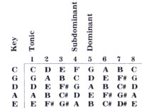

Even homesteaders need to relax and enjoy themselves from time to time, right? And almost everybody these days wants to cut his or her cost of living. So how about a little do-it-yourself entertainment?
And that's what this column is all about. Down-home music that you can make . . . and the instruments (which, in some cases, you can also make!) to play that music on.
The important thing is that this is your column. If you like it, write to me and let me know. If you have some ideas for this feature, let me know that. I'm open to any suggestions or information you care to contribute. I'll even try to answer your questions about down-home music . . . but-both for the benefit of all MOTHER's readers and to ease my correspondence load-I'll deal with those questions, whenever possible, here in this column . . . rather than in personal letters.
Address your correspondence- for this column and this column only-to Marc Bristol, 18520 312th Ave. NE., Duvall, Wash. 923019.
In all the years that I've been writing this column, I've never once delved into the one aspect of homegrown music that I know best: playing the guitar. (Of course, I've been singing, clapping my hands, whistling, and listening since before I can remember, but the of gitbox introduced me to the world of musical instruments some 16 years ago.) And although I certainly don't know everything there is to know about pickin'-or even close to half the story-I have learned a trick or two along the way. I'd like to take this opportunity to pass along what tips I can. . . while asking you to remember that there are lots more ways to go about it than my way.
For the beginning picker, simply forcing clumsy fingers through the chord patterns is usually the most difficult task. And the second worst is waiting until calluses build up so the fingers can press the strings down long enough to play more than a song or two. All I can tell you novices is . . . hang in there! Learn at least a couple of chords, and some songs you can use them on. Instead of just practicing scales and chords, play the songs and concentrate on the music. Really, if you stick to it, in a short while your hands will start getting used to the yoga positions you're putting them through, and suddenly those insurmountable obstacles will look easy!
Once you've mastered the first few chords, learn more . . . and try songs with more complicated arrangements. There're a great many books on the market containing diagrams of chords (many even include pictures of someone's hand playing them), and such manuals can be all but indispensable at the beginning. You can find the books at most music stores, or mail-order them from the sources listed in this column in MOTHER NO. 55.
CHORD DATA
As you improve, you'll notice that most American pop and folk music is constructed around a three-chord progression. Of course, many songs have fouror five-chord progressions, but the major movement even in most of those is through the tonic, subdominant, and dominant chords.
Now those are pretty big words, so I'll give some examples. In the key of C, the tonic chord (1) is C, the subdominant (4) is F, and the dominant (5) is G. The numbers 1, 4, and 5 refer to the position of each chord's "name" note in the diatonic (eight-tone) scale: In the key of C, C is the first note, F is the fourth, and G is the fifth.
As you can see in the following chart, in the key of G the tonic chord is G, the subdominant is C, and the dominant is D . . . and by checking down the list, you'll find that if you learn just seven chords, you can play three-chord songs in five different keys! Then, if you learn the minor and seventh variations on these chords, you can fake your way through just about any kind of music from Christmas carols to ragtime jugband blues.
When using the number system displayed on the chart, a three-chord song might be called a 1-4-5 (if that's the order the chords are played in) . . . or a 1-5-4, a 1-4-1-5, or some other arrangement of the same trio of chords. (Sometimes folks will use the term "14-5" to mean any three-chord song, even when that isn't the actual order in which the chords appear . . . and that can be confusing. But-when used accurately-this number system provides a very streamlined way of describing a chord progression.)
Once you understand the concept of chord progressions, you can start tram posing . . . that is, playing a song in a different key from the one you learned it in. Transposing comes in handy when someone shows you a song that's written in a key you find unsingable . . . or when you and a friend want to play a tune together, but know it in two different keys.
PICKIN "N' STRUMMIN'
So far we've discussed only the challenges that await the hand you use for making chords . . . but what about your other mitt? Well, it'll be strumming, pick-strumming, flatpicking, or fingerpicking (I've seen some people use a combination of all four). Most players start out either strumming or fingerpicking a basic rhythmic pattern, and gradually get fancier.
For the sake of learning different pickstrum and fingerpicking combinations, it's useful to understand the style of guitar notation called tablature. This is usually seen-in printed music-directly below the standard musical notation and is simply a more direct way of representing how the song is played on the guitar.
The system uses a six-line staff, each line representing a string on the instrument as you'd view it looking down (with its head and neck to your left). Wherever a note is played, a number appears . . . on the line that represents the string the note is played on. That number stands for the fret at which the string is fingered. In addition, the direction of the pick stroke is shown by symbols (yes, upstrokes are very important in flatpickstyle guitar!), along with such things as hammer-ons, slides, and pull-offs. The standard notation, above the tablature, indicates the duration of the notes played (although satisfactory methods have recently surfaced for including that in the tab notation, too).
Fig. A is an example of a simple pickstrum pattern shown in standard notation and tablature. You can use this sort of alternating bass note strumming pattern for a wide variety of country and folk music, and eventually even move out of it into melody flatpicking in the manner that was made famous by Maybelle Carter. (In her style, the melody grows out of the alternating bass note lines, while the pickstrum pattern also continues to give a bass, rhythm, melody arrangement.)
Of course, the bass notes I've shown for the chords C and G aren't the only ones that could be used here. Simply pick out-for whatever chord you're playing-the bass notes you like, and maybe alternate between a couple of different ones.
Furthermore, remember that at the points where I've indicated the strumming of three strings at a time, it's not essential to hit only those three. Since you're fingering the entire chord, it'll sound fine if you strike four or more. (And speaking of fingering a whole chord, a lot of beginners learn to play on ly a four-string C or a three-string F because it's "easier". But, by doing so, you diminish your ability to play notes . . . by 20% to 25%. I advise learning the complete chord right from the start.)
All the strokes in Fig. A are downstrokes. In Fig. B I've added a short up stroke after the strumming of the chord. It's indicated-above the number-by a V-shaped symbol, and the downstrokes by the H-symbol. Again, although I've specified that you pluck the first string, it's OK if you hit two or three. The result will still be a kind of "chicken-pickin' " or country shuffle effect that adds a lot of bounce to the song. You can achieve a similar sound if you chop off the notes of the strum parts by deadening the strings just after strumming them. This is usually done by lifting your fingers off the fretboard a bit, but not completely off the strings.
In fact, to get the full impact of this style, it's best to chop off the upstroke note and the chord itself a bit. Once you're confident of your ability to do so by lifting your fingers slightly, try accomplishing the same thing by using the palm of the pick hand to deaden the strings, just after-or sometimes while-you hit them. (It takes some experience to master this technique, so if you're just getting started, don't let yourself get too frustrated trying to figure out how it works.)
When you play chords up the neck, though, or any chord where you're fretting all the strings, it's much easier to chop off the notes wherever you want to by simply raising your fingers a tad.
TUNING FOR MERRIE MELODIES
Learning to tune your instrument, of course, is one of the first big lessons facing a beginning guitarist. When your instrument isn't in tune, it won't be much fun to play, whether you realize it's out of whack or not. Harmonious vibrations make you feel good, you see, while dissonant ones have the opposite effect!
Guitars can be tuned "to themselves" when you don't have a piano, tuning fork, or other fixed note device on hand. Any beginning instruction book will explain the basic method of doing so. The main trick is training your ear to hear when two notes are exactly the same . . . to recognize a beat frequency, which is a sort of oscillating-or throbbing-of the tone. That pulsating sound indicates the difference in frequency of vibration between two strings. You'll hear that variation in pitch disappear when the two strings are in tune. (I tune my guitar by several methods, including the fifth-fret, fourth-fret technique that most books recommend.)
There's a good deal more that can be said about playing guitar, of course, but I'm running out of space for now. If you'd like me to return to the subject later, let me know. I always appreciate hearing any suggestions concerning what you'd like this column to cover.
FIDDLE KIT
One more thing: I've just heard about a new item on the market called "The Original Fiddle Kit". I haven't gotten a look at one yet, but according to the brochures the body is handcrafted of white pine-sanded but unfinished-and the kit is shipped in a box that doubles as a carrying case.
There's a special introductory offer for MOTHER-readers: $39.95 each, plus $3.50 for shipping and handling. (After January 1, 1982 the regular pric e of $59.95 will go into effect.) You can send your orders or inquiries to The Fiddle Works, Dept. TMEN, P.O. Box 1250, McLean, Virginia 22101-1250.
|
|
 |
|